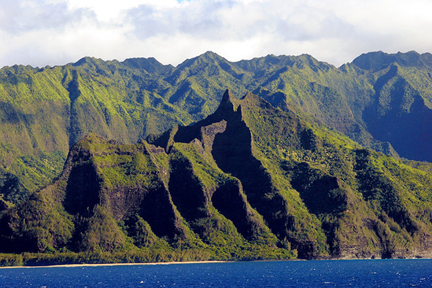
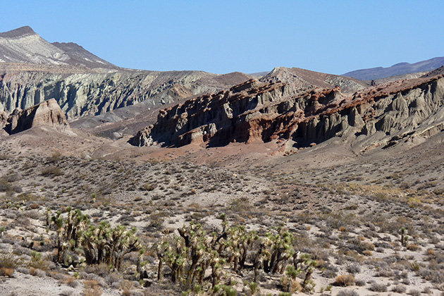

Jurassic Park
Main Content

Discover where the original Jurassic Park (1993) was filmed on the islands of Kauai and Oahu in Hawaii; and in California.
Jurassic Park found most of its locations on Kauai, smallest and most beautiful of the four major Hawaiian islands, despite the best efforts of Hurricane Iniki, which flattened the sets.
Apart from interiors and many of the night scenes, which were filmed on soundstages at Universal Studios in North Hollywood, the only mainland USA location is the dig site, where palaeontologists Alan Grant (Sam Neill) and Ellie Sattler (Laura Dern) are tempted with the promise of generous funding to visit the proposed park of John Hammond (Richard Attenborough).

It’s not the Badlands of ‘Montana’ but a section of Red Rock Canyon State Park near Ridgecrest, in California’s Mojave Desert, accessible only to four-wheel drive vehicles. You can find some spectacular landscapes here, but there are no dinosaur fossils.
The prologue, with one of the park’s staff falling prey to the unseen predator being loaded into a container, was filmed in Limahuli Garden, 5-8291 Kuhio Highway, at Hanalei, on Kauai’s northern coast. Since 1976, the garden has been one of the properties comprising the National Tropical Botanical Garden, and it’s open for tours.
Supposedly in the ‘Dominican Republic’, the site of the ‘Mano de Dios Amber Mine’, where lawyer Gennaro (Martin Ferrero) decides that a respected palaeontologist is needed on board, is also Kauai, alongside Hoopii Falls, on the Kapaa Stream at Kapaa, on the eastern side of the island. The falls are on public land but there’s short hike to find them. Hikerly.com has fairly detailed directions.
The waterfront at Kapaa itself, on Kuhio Highway, was transformed into the outdoor cafe at ‘San Jose, Costa Rica’, where the avaricious Dennis Nedry (Wayne Knight) gets paid to smuggle out dinosaur embryos in a shaving cream can.
The first views of ‘Isla Nublar’ from the helicopter are the green slopes of Kauai’s Na Pali Coast, to the west of the Limahuli Garden location on the north shore. You can’t access the steep-sided valleys by vehicle, though the adventurous could negotiate the 11-mile trail from Ke’e Beach to Kalalau Valley. Otherwise, you can see the rugged terrain from a boat or helicopter tour. Na Pali’s forbidding cliffs previously made it an ideal stand-in for the coast of ‘Skull Island’ in the 1976 version of King Kong.
The valley through which the ’copter continues can be found on the south of the island. It’s the Hanapepe Valley, to the east of Hanapepe town. The Kaumualii Highway (50) will take you out to the Hanapepe Valley Lookout, but once again the best way to see it is from the air. Most of the Kauai helicopter tours will take you over the Manawaiopuna Falls in the Valley, where the film’s helipad was constructed.
The oddly positioned scene of the new arrivals encountering a Brachiosaurus (which renders the actual tour a bit anticlimactic) by the lagoon, is alongside Puu Ka Ele Reservoir on the Jurassic Kahili Ranch, a working cattle ranch covering 2,500 acres south of Kuhio Highway near Kilauea, on the island’s northeast tip.
Apart from the two sequels, The Lost World (1997) and Jurassic Park III (2001), the 1998 version of Mighty Joe Young, and the 2011 Adam Sandler comedy Just Go With It have also been filmed on the ranch land.
The ‘Visitor Center’ itself was constructed at the Valley House Plantation Estate, 6191 Hauaala Road, Kealia, north of Kapaa, though of course the interiors were filmed back in the studio in LA.
A couple of stops on the Jurassic Park jeep tour – the ‘no-show’ Dilophosaurus Paddock and the encounter with the sick Triceratops – were filmed on the the vast private estate, which also hosted filming for Romancing the Stone, Tropic Thunder, George of the Jungle and Pirates of the Caribbean: On Stranger Tides.
A tough place to visit is the spot where the giant entry gates to ‘Jurassic Park’ were erected, deep in the centre of Kauai at the base of Mount Wai’ale’ale. Although the gates were removed after filming, two tall poles still remain on either side of the path. To find them is an eight-mile hike, following Kuamo’o Road from Wailua until it changes from a paved road to a dirt track, becoming Waikoko Forest Management Road.
This is also the route to Blue Hole, a water-filled canyon alongside which the T Rex paddock was constructed. Hawaii-guide.com has detailed directions, but unless you’re an experienced hiker with a good map, you might want to think about hiring a guide or looking for an official tour.
One location found on another of the Hawaiian islands is the rolling green landscape where Alan Grant and the kids find themselves in the path of a herd of Gallimimus fleeing from the T Rex. The stampede was filmed at the Kualoa Ranch, Kamehameha Highway, Ka’a’awa Valley on Oahu, the most populous and developed of the islands.
The ranch is open to visitors, and the fallen tree, under which Grant and the kids take shelter, is still there as a great photo opportunity. There’s a one-hour location tour, which takes in sites from the 1998 Godzilla, Windtalkers, 50 First Dates and TV series Lost. Take Kamehameha Highway north from Honolulu, about 20 miles. The entrance is on the left, opposite the Kualoa Regional Park.
It’s back to Kauai to find the spot where Grant stumbles across the raptor nest, and realises that the dinosaurs have found a way to reproduce, which is another of the National Tropical Botanical Garden properties. He finds the hatched eggs beneath the giant Moreton Bay fig trees in the Allerton Garden, 4425 Lawai Road, Koloa. The same garden is also where Jurassic Park’s maintenance shed was built. The same garden was seen as Captain Jack Sparrow searches for the Fountain of Youth in Pirates Of The Caribbean: On Stranger Tides.
There’s one obstacle left – the electrified fence, which Grant and the kids must negotiate before Ellie manages to restore the lethal current. This was erected in Kauai’s Olokele Valley, a few miles northwest of Waimea.
Spielberg was no stranger to Kauai, since the opening scene of Raiders Of The Lost Ark was filmed on the island in 1980. The island is 33 miles long, 25 miles across at its widest point and about 10 per cent of it is accessible by car. You’ll probably need take an international flight into Honolulu International Airport (HNL) on Oahu, and then connect to Kauai’s Lihue Airport (LIH) in the southeast, the commercial and cultural centre of the island.
Visit Info
Visit The Film Locations
Hawaii
Visit: Hawaii
Visit: Oahu
Flights: Honolulu International Airport, 300 Rodgers Boulevard, Honolulu, HI 96819 (tel: 808.836.6411)
Visit: Kualoa Ranch, Kamehameha Highway, Ka’a’awa Valley, Kaneohe, HI 96744 (tel: 808.237.7321)
Visit: Kauai
Flights: Lihue Airport, 3901 Mokulele Loop, Lihue, HI 96766 (tel: 808.274.3800)
Visit: Limahuli Garden, 5-8291 Kuhio Highway, Hanalei, HI 96714 (tel: 808.826.1053)
Visit: Allerton Garden, 4425 Lawai Road, Koloa, HI 96756 (tel: 808.742.2623)
Visit: the Na Pali Coast
Explore: Na Pali Boat Tours
California
Visit: California
Visit: Red Rock Canyon State Park, CA-14, Cantil, CA (tel: 661.946.6092)